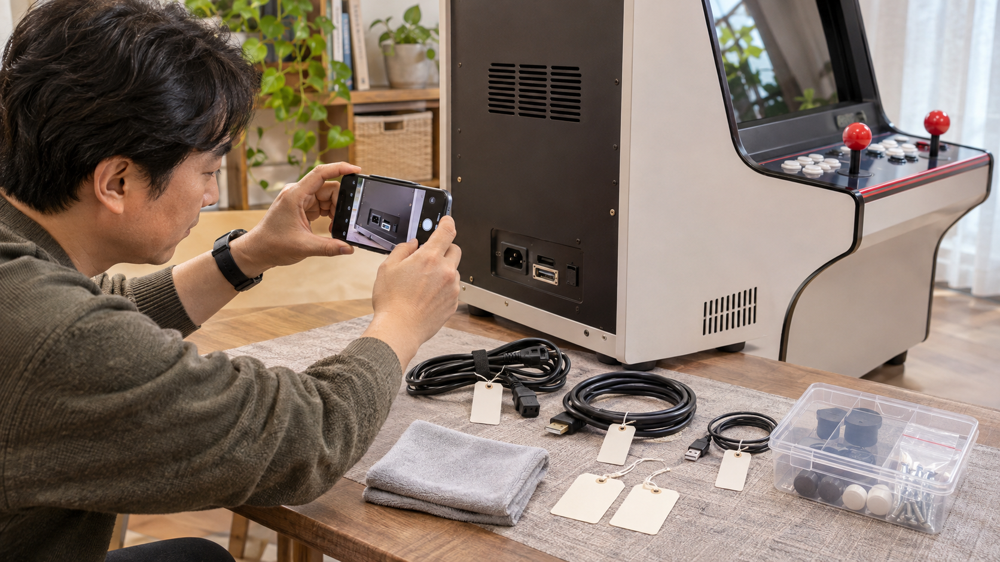
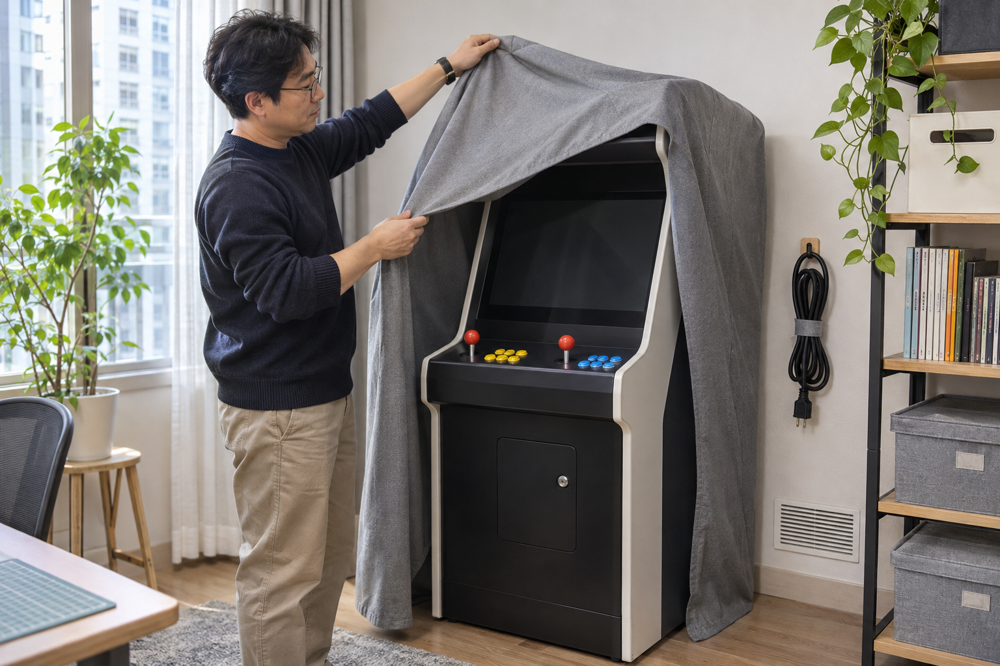

가정용 오락기를 오래 사용하지 않을 때는 제품 안내대로 전원을 끄고 연결 상태와 주문 정보를 기록한 뒤, 먼지와 습기가 적고 이동 동선에서 벗어난 실내에 보관하세요. 케이블과 구성품은 제품명 기준으로 따로 정리하고, 덮개는 통풍구를 막거나 습기를 가두지 않도록 제품 안내를 확인한 뒤 사용하세요. 다시 사용할 날짜가 정해지지 않았더라도 보관 상태는 정기적으로 살펴보는 것이 좋습니다.

보관 전에 전원과 상태를 기록하세요
게임을 종료하고 해당 제품 안내에 맞춰 전원을 끈 뒤 화면과 소리가 멈췄는지 확인하세요. 케이블을 분리하기 전에는 본체 뒤와 조작부, 화면 연결부를 전체 사진과 가까운 사진으로 남기고 주문 정보와 제품명을 함께 보관하세요. 전원 차단과 분리 순서가 불분명하면 임의로 진행하지 말고 판매자에게 정확한 제품명으로 문의하세요.
보관 전 사진과 주문 기록은 다시 연결하거나 문의할 때 현재 상태를 비교하는 기준이 됩니다.
노리박스 공개 제품 목록에는 스탠드형·좌식형·테이블형과 TV 연결형 분리기통 제품이 각각 안내되어 있습니다. 화면과 본체가 한 몸인 제품과 TV에 연결하는 제품은 분리할 구성품이 다를 수 있으므로, 다른 모델의 보관 방법을 그대로 따라 하지 말고 구매한 제품명과 구성부터 확인하세요. 주문 기록을 정리하는 방법은 오락기 구매 후 주문 정보 보관 방법에서 이어서 볼 수 있습니다.
화면과 조작부를 깨끗하고 마른 상태로 정리하세요
화면과 조작부의 먼지는 전원을 끈 상태에서 마른 부드러운 천으로 정리하고, 세정액을 기기에 직접 뿌리지 마세요. 조이스틱과 버튼 틈에 습기나 천 조각이 남지 않았는지 확인하고, 청소만을 위해 조작부를 열거나 부품을 분해하지 마세요. 화면 소재와 청소 방법이 불분명하면 오락기 화면과 조작부 청소 방법을 참고하고 제품 안내를 우선하세요.
먼지와 얼룩을 정리한 뒤 습기가 남지 않았는지 확인해야 덮개를 씌울 시점을 판단하기 쉽습니다.
- 화면과 조작부는 서로 다른 마른 부드러운 천으로 닦기
- 액체가 닿았다면 완전히 마르기 전에 덮거나 전원을 연결하지 않기
- 통풍구 주변의 먼지는 안쪽으로 밀어 넣지 말고 바깥쪽에서 정리하기
- 청소 뒤 화면·버튼·조이스틱 상태를 사진으로 남기기
케이블과 구성품은 제품별로 나누어 보관하세요
분리해야 하는 케이블은 연결 전 사진을 기준으로 양쪽 끝에 같은 표시를 남기고, 세게 꺾거나 팽팽하게 감지 않은 상태로 정리하세요. 전원선·화면선·조작부 연결선과 작은 구성품은 제품명별로 나누되 단자 금속 부분이나 제품 표시를 가리지 마세요. 용도를 모르는 선이나 부품은 다른 기기에 시험 연결하지 말고 양쪽 단자와 제품명을 촬영해 문의하세요.
케이블 양쪽과 구성품을 같은 제품 기준으로 묶어 두면 재설치할 때 혼선을 줄일 수 있습니다.
케이블 분류와 표시 방법은 오락기 케이블 정리 방법에서 자세히 확인할 수 있습니다. 노리박스 공개 제품 목록에는 오락기용 220V 전원케이블과 전용 받침대, 분리형 조이스틱 세트가 별도 상품으로도 안내되므로 보관 중인 부품이 어느 제품에 속하는지 제품명으로 구분하세요.

보관 장소와 덮개 상태를 정기적으로 확인하세요
오락기는 바닥의 물기나 결로 흔적이 없고 문과 가구의 이동 경로에 닿지 않는 실내 위치에 두세요. 덮개를 사용한다면 제품 안내를 확인하고 통풍구를 막거나 케이블과 조작부를 누르지 않는지 살펴보세요. 보관 중에는 바닥 상태, 덮개 안쪽의 습기, 통풍구 막힘, 케이블 눌림을 같은 순서로 확인하고 이상이 보이면 전원을 연결하기 전에 사진과 제품명을 준비해 문의하세요.
보관 중에는 바닥의 물기와 통풍구 막힘, 케이블 눌림을 같은 순서로 반복 확인하세요.
다시 사용할 때는 덮개를 벗기고 제품과 케이블에 습기나 손상이 없는지 먼저 확인한 뒤 제품 안내 순서에 따라 연결하세요. 현재 노리박스 오락실게임기와 관련 구성품은 제품자세히보기에서 확인할 수 있습니다.